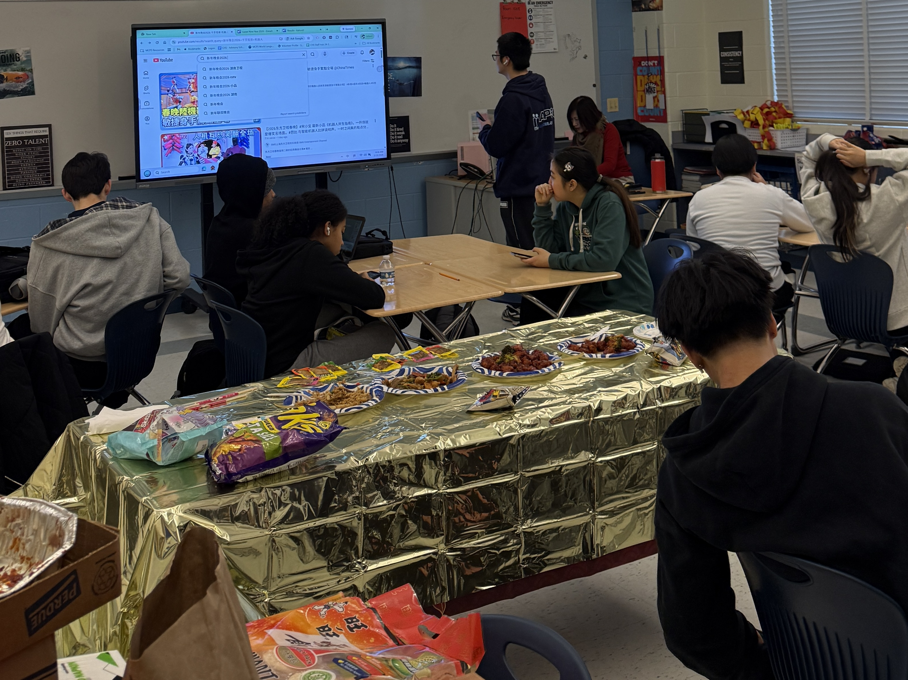
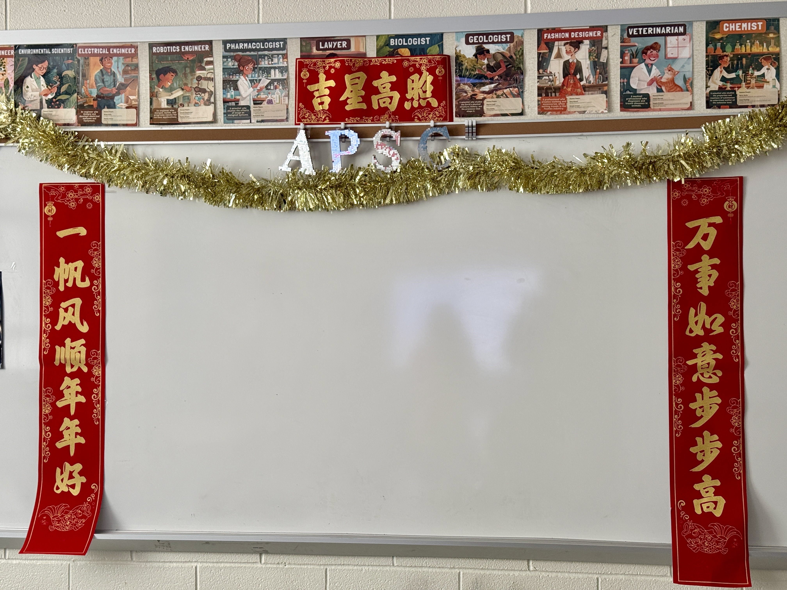

Chinese New Year Celebration 2026

The Spirit of the Festival
Our Chinese New Year celebration partnered with the Chinese class at Clarksburg High School to create an immersive cultural experience for students of all backgrounds. The event was designed to not only celebrate the rich traditions of the Chinese New Year but also to foster cross-cultural understanding and unity within our school community. Through sharing customs, stories, and food, we aimed to strengthen the bonds between students and promote a more inclusive environment on campus.


Impact & Engagement
With over 40 participants, the event featured Spring Festival Gala, hand-made lanterns, and an extensive tasting session of Asian cuisines. With the support of the Chinese class, we were able to create an authentic and engaging experience that resonated with attendees. The event not only provided a platform for cultural exchange but also sparked meaningful conversations between different student groups, fostering a greater sense of community and mutual respect on campus.